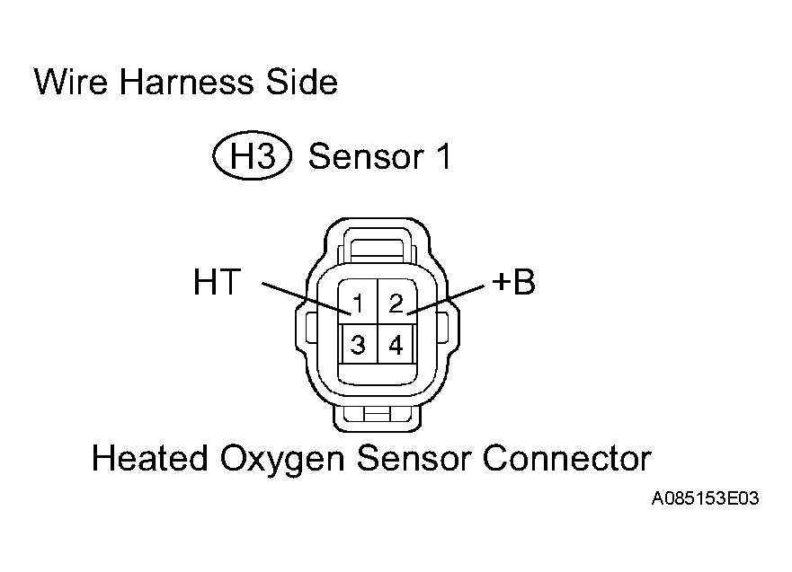

Inspection Procedure
HINT:
Read freeze frame data using the intelligent tester. Freeze frame data records the engine conditions when malfunctions are detected. When troubleshooting, freeze frame data can help determine if the vehicle was moving or stationary, if the engine was warmed up or not, if the air-fuel ratio was lean or rich, and other data from the time the malfunction occurred.
- INSPECT HEATED OXYGEN SENSOR (HEATER RESISTANCE)
- Disconnect the H3 or H7 Heated Oxygen (HO2) sensor connector.
- Measure the resistance of the HO2 sensor connector.
Standard resistance (Sensor 1)
TESTER CONNECTION - SPECIFIED CONDITION (RESISTANCE) SENSOR 1Tester Connection Specified Condition HT (1) - +B (2) 11 to 16 Ω at 20°C (68°F) HT (1) - E1 (4) 10 kΩ or higher Standard resistance (Sensor 2)
TESTER CONNECTION - SPECIFIED CONDITION (RESISTANCE) SENSOR 2Tester Connection Specified Condition HT (1) - +B (2) 11 to 16 Ω at 20°C (68°F) HT (1) - E1 (4) 10 kΩ or higher
NG: REPLACE HEATED OXYGEN SENSOR
OK: Go to Next Step
- INSPECT EFI RELAY (Marking: EFI)
- Remove the EFI relay from the engine room relay block.
- Measure the resistance of the EFI relay.
Standard resistance
TESTER CONNECTION - SPECIFIED CONDITION (RESISTANCE)Tester Connection Specified Condition 3 - 5 10 kΩ or higher 3 - 5 Below 1 Ω (when battery voltage is applied to terminals 1 and 2)
NG: REPLACE EFI RELAY
OK: Go to Next Step
- INSPECT ECM (HT1A, HT1B VOLTAGE)
- Turn the ignition switch ON.
- Measure the voltage of the ECM connectors.
Standard voltage
TESTER CONNECTION - SPECIFIED CONDITION (VOLTAGE)Tester Connection Specified Condition HT1A (E5-1) - E03 (E6-4) 9 to 14 V HT1B (E5-2) - E03 (E6-4) 9 to 14 V
OK: REPLACE ECM
NG: Go to Next Step
- CHECK HARNESS AND CONNECTOR (HEATED OXYGEN SENSOR - ECM, HEATED OXYGEN SENSOR - EFI RELAY)
- Check the harness and connectors between the ECM and HO2 sensor.
- Disconnect the H3 or H7 HO2 sensor connector.

Courtesy of © TOYOTA, LICENSE AGREEMENT TMS1002 - Disconnect the E5 ECM connector.
- Measure the resistance of the wire harness side connectors.
Standard resistance (Check for open)
TESTER CONNECTION - SPECIFIED CONDITION (RESISTANCE) CHECK FOR OPENTester Connection Specified Condition HT (H3-1) - HT1A (E5-1) Below 1 Ω HT (H7-1) - HT1B (E5-2) Below 1 Ω Standard resistance (Check for short)
TESTER CONNECTION - SPECIFIED CONDITION (RESISTANCE) CHECK FOR SHORTTester Connection Specified Condition HT (H3-1) or HT1A (E5-1) - Body ground 10 kΩ or higher HT (H7-1) or HT1B (E5-2) - Body ground 10 kΩ or higher
- Disconnect the H3 or H7 HO2 sensor connector.
- Check the harness and connectors between the HO2 sensor and EFI relay.
- Disconnect the H3 or H7 HO2 sensor connector.
- Remove the EFI relay from the engine room relay block.
- Measure the resistance of the wire harness side connectors.
Standard resistance (Check for open)
TESTER CONNECTION - SPECIFIED CONDITION (RESISTANCE) CHECK FOR OPENTester Connection Specified Condition +B (H3-2) - Engine room relay block (EFI relay terminal 3) Below 1 Ω +B (H7-2) - Engine room relay block (EFI relay terminal 3) Below 1 Ω Standard resistance (Check for short)
TESTER CONNECTION - SPECIFIED CONDITION (RESISTANCE) CHECK FOR SHORTTester Connection Specified Condition +B (H3-2) or Engine room relay block (EFI relay terminal 3) - Body ground 10 kΩ or higher +B (H7-2) or Engine room relay block (EFI relay terminal 3) - Body ground 10 kΩ or higher
NG: REPAIR OR REPLACE HARNESS OR CONNECTOR
OK: REPLACE ECM
- Check the harness and connectors between the ECM and HO2 sensor.